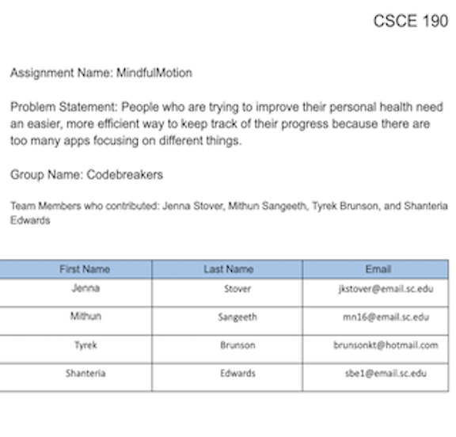
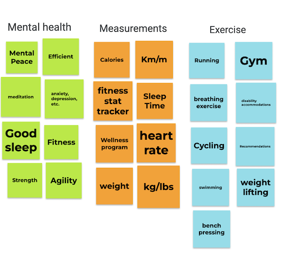
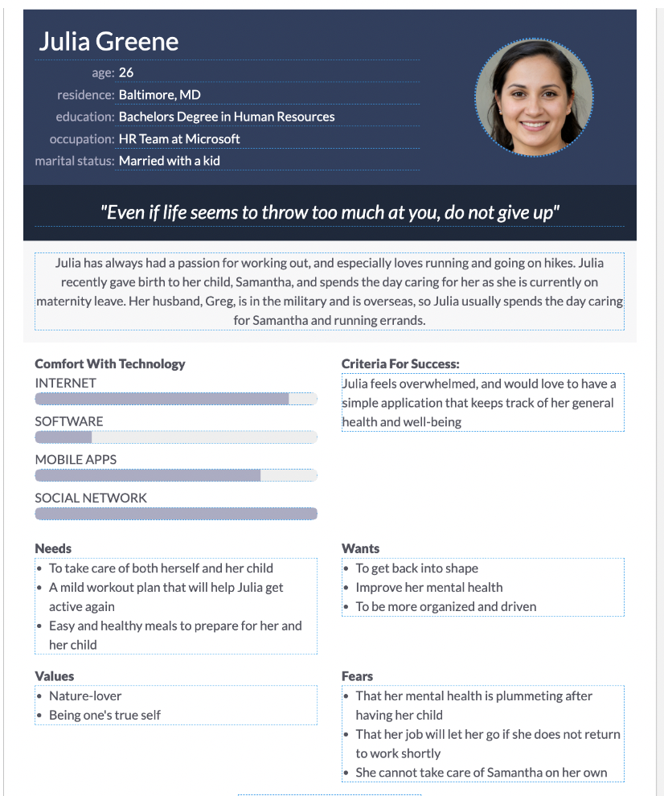
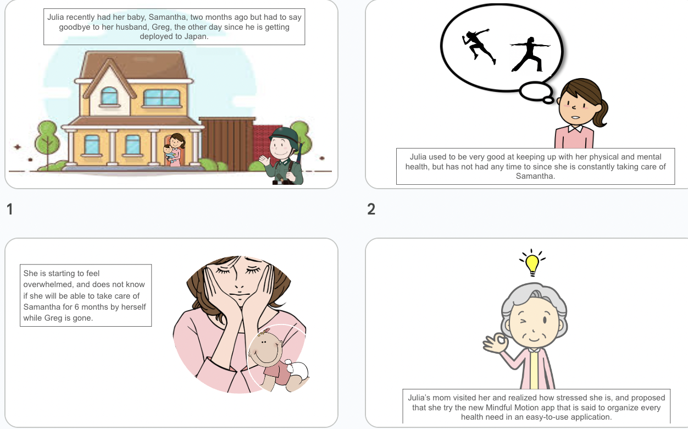
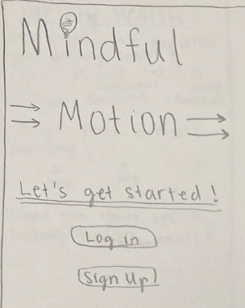
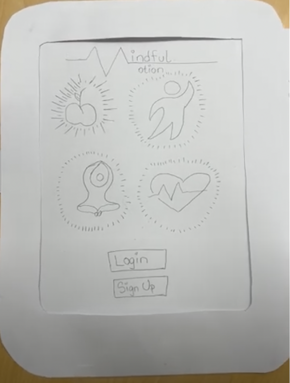

Problem Statement: Health Apps
People who are trying to improve their personal health need an easier, more efficient way to keep track of their progress because there are too many apps focusing on different things.
Affinity Diagram: Health Apps
My group and I brainstormed different categories related to health apps, and came up with flashcards for each category.
4 Personnas for MindfulMotion
Personnas of typical health app users.
4 Storyboards for MindfulMotion
Storyboards for the personnas of typical health app users.
4 Sketches
Rough ideas of how the application may look.
Paper Prototype
A paper walkthrough of the potential look of every screen in the application.
Hi-fi Prototype

A high fidelity prototype of the MindfulMotion application.